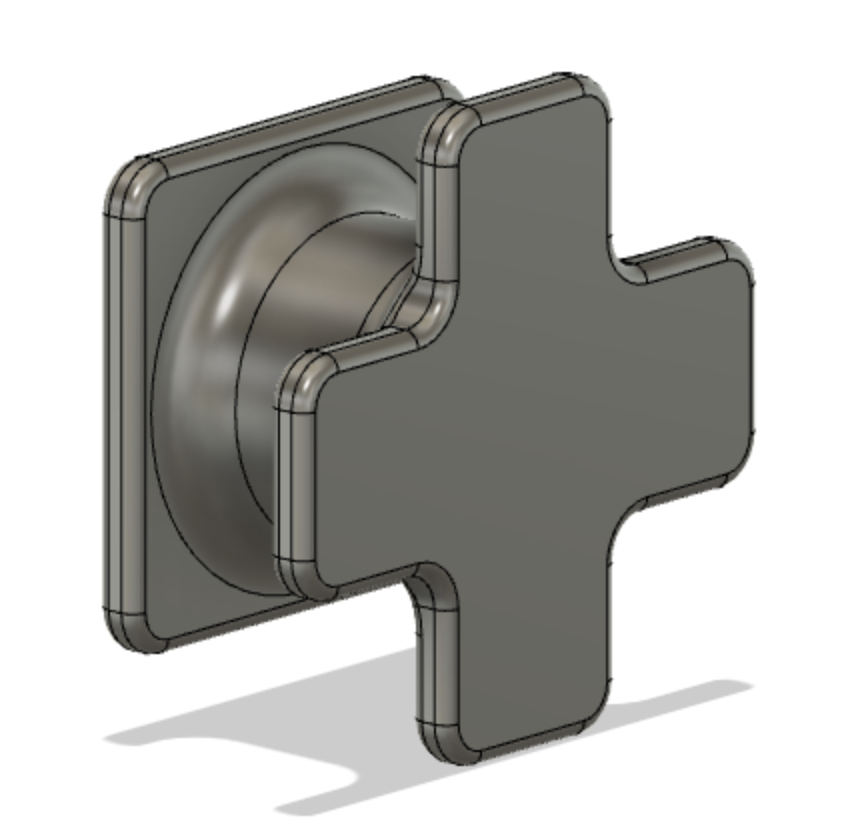
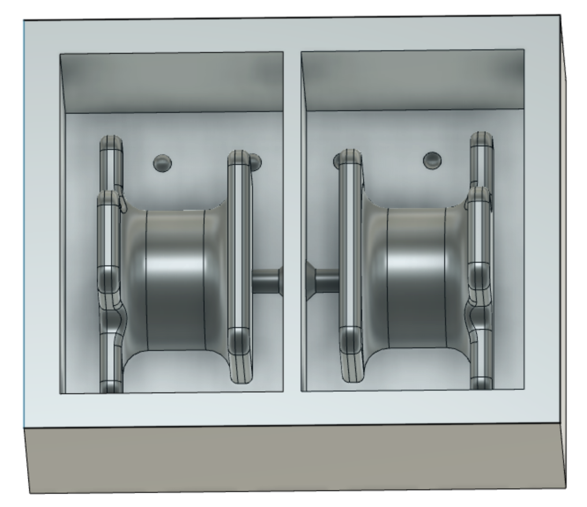

Markmið
Í verkefni 5 átti að framleiða fræst mót. Hluturinn sem framleiða átti með mótinu skyldi beintengjast fræsingunni í verkefni 4. Nú voru aðstæður þannig að ekki var hægt að framleiða mótið og nota það, en verkefninu var breytt þannig að alla aðra hluta verkefnisins en framleiðsluna skyldi framkvæma.
Nálgun og ákvörðun
Þegar þetta verkefni var hafið höfðum við ákveðið hvað við ætluðum að gera í verkefni 4 og ákváðum í framhaldi af því að fræsa mót fyrir veggfestingar svo að hægt væri að hengja skildina upp á vegg. Þá var hafist handa við að leita hugmynda á alnetinu, en þá “googluðum” við einfaldlega “simple wall mount”. Engin mjög fýsileg lausn kom upp fyrir okkar tilvik, en hugmyndir byrjuðu að myndast og við ákváðum að byrja að teikna í Fusion 360 (https://www.autodesk.com/campaigns/education/fusion-360).
Hönnun
Við byrjuðum á að teikna einfaldan kassa, þann hluta sem ætlaður er til að festa á vegg og extrude-a hann. Næst var sívalningur extrude-aður ofan á aðra hlið kassans og að lokum teiknað nokkuð einfalt form til að festa við skjöldinn sjálfann ofan á sívalninginn.
Ákveðið var að gera veggfestingarnar mjög litlar, þar sem þær þurfa ekki að hafa mikinn burð, skildirnir eru léttir, og hægt væri einfaldlega að hafa fleiri veggfestingar ef þess þarf. Auðvelt er þó að breyta stærðum á hlutnum, þar sem notaðar eru parametrískar breytur. Næst voru sett fillet á öll horn, bæði til að auðvelda fræsingu (ekki hægt að fræsa 90° horn með góðu móti) og til að styrkja. Hönnunin gerir að verkum að aðgengi að festingunni með bor er nokkuð auðveld. Við töldum ekki þarft að setja göt í mótið fyrir festinguna, en gerum því ráð fyrir að bora þurfi í gegn um þær eftirá. Einnig mun þurfa að bora í gegnum skjöldinn til að festa hann upp, en það þótti okkur allt í góðu.
Nú tók við hönnun á móti. Þá fórum við eftir leiðbeiningum úr tveimur myndböndum: myndband 1 og myndband 2 . Teiknaður var kassi og hann extrudaður þannig að hann næði alveg utan um festinguna. Þá var combine fítusinn notaður til að skera úr kassanum eftir festingunni, og kassanum skipt í tvennt þannig að hann yrði að tveimur hlutum. Bætt var hálfkúlum svo að mótið myndi passa vel saman, og gati til að sprauta efni inn í. Að lokum var mótunum svo raðað hlið við hlið.
Síðasta skref var svo endurtekið til að gera mót fyrir mótið.
Toolpaths
Þá tók við toolpath gerð. Þetta gekk brösulega fyrir sig en hvorug okkar hafði gert toolpath áður í Fusion. Til þessa nýttum við tvö myndbönd: myndband 1 og myndband 2, en einnig þessa síðu. Þetta fór aðallega fram með trial and error aðferðinni, við nýttum simulate fítusinn vel í fusion og hermdum eftir hverju toolpath á fætur öðru þar til við vorum sáttar með útkomuna. Auðvelt ætti að vera að pússa það sem eftir stendur. Ef til framleiðslu hefði komið hefðum við fengið kennara til að aðstoða við að laga til leiðirnar til að spara tíma eða betrumbæta útkomuna á annan hátt. Hér fyrir neðan er myndband af aðgerðum. Heildartími í fræsingu ætti að vera um 1klst og 20 mín samkvæmt Fusion.